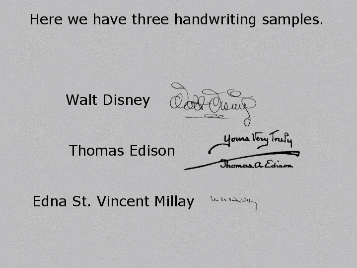
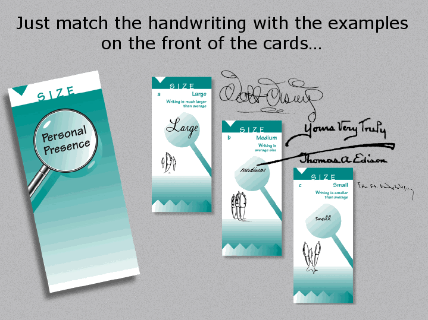
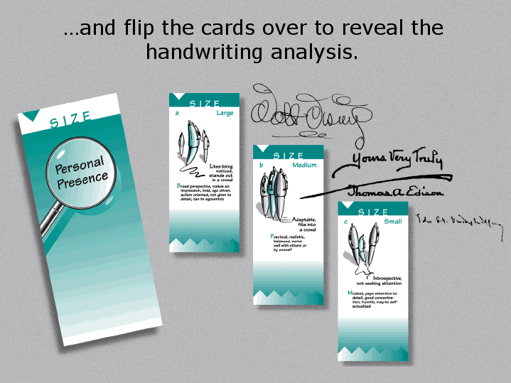
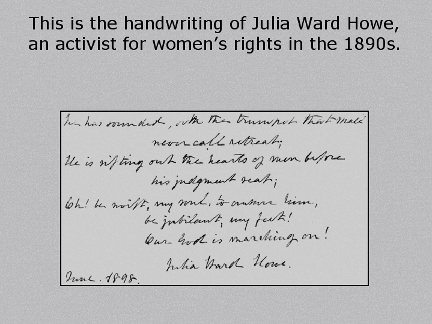
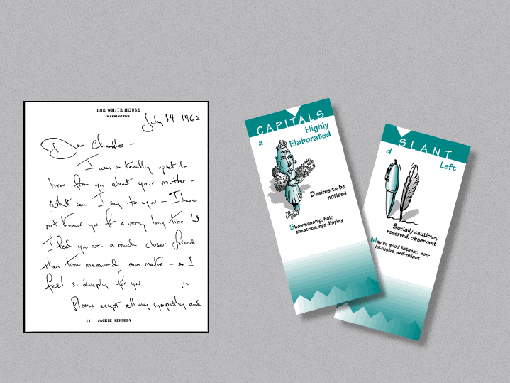
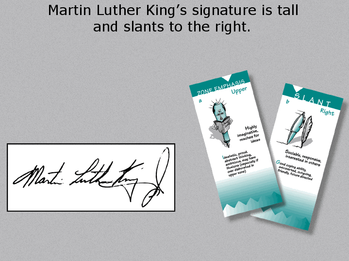
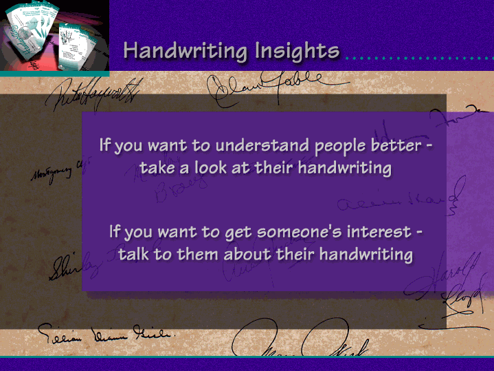

I just love the handwriting of Julia Ward Howe. It is a great example that not everyone wrote in a more elaborate style 100 years ago. For genealogists reading this, note that her writing style is similar to how many people write today. Her right slant shows her to be outgoing, her baseline shows she is upbeat, and that her writing matches her signature show that she was authentic in how she presented herself.
Next we have the writing of Jackie Onassis. The first thing that stands out is that she has overly large capitals, and a left slant.

This is a interesting combination. The large capitals indicate that she wants to be noticed, and the left slant indicates a reserved personality. Those of you who remember her will agree that this is accurate!
Next we have the writing of the Reverend Doctor Martin Luther King. Notice how tall his letters are, and the strong right slant.

His writing reveals a proud, idealistic person, always reaching for new ideas, and reaching out to other people.
*******************************************
Experience the thrill of analyzing handwriting! Entertain
family and friends by showing them what their handwriting
reveals.
Handwriting
Insights is a high quality deck of 64 connected,
illustrated cards that teaches you handwriting analysis as
you use it. Analyze handwriting in 5 minutes. Results are
worded constructively so people feel good about what you
have to say.


We
are closing out our inventory. While supplies last you can
order your kit
Book Clearing House
for only $10.95.
Or, if you prefer to order over the telephone you can call
Book Clearing House
In the United States, dial toll-free: (800)
431-1579.
International
customers, please call: (914) 835-0015.

***Disclaimer
- This information is intended as amusement only. The
author and Hidden Creek Farm, Inc. hereby waive any
liability associated with one's use of this information in
performing such analysis on any handwriting
sample.***Copyright
2004 Hidden Creek Farm, Inc. All rights
reserved.
***Disclaimer - This information is intended as amusement only. The author and Hidden Creek Farm, Inc. hereby waive any liability associated with one's use of this information in performing such analysis on any handwriting sample.***
Copyright 2004 Hidden Creek Farm, Inc. All rights reserved.